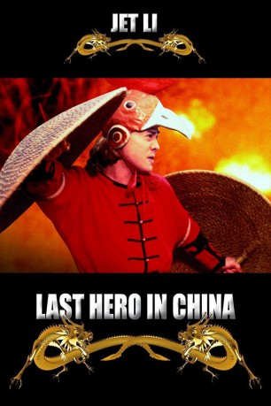

#5694 Last Hero in China
 
 IMDB-Wertung: 6.8 / 10
IMDB-Wertung: 6.8 / 10  Metascore: 0
Metascore: 0 
China gegen Ende des 19. Jahrhunderts. Als Wong Fei-Hung (Jet Li) merkt, dass seine neue Kampfkunstschule von einem undurchsichtigen Mönchsorden bedroht wird, beginnt für ihn und seine Männer der Kampf. Im Dickicht von Korruption und Betrug stellen sie sich dem mächtigen Gegner in den Weg. Von seinen Feinden in die Enge getrieben hat Wong keine andere Wahl: Er muss den Kampf gegen die Bande von kaltblütigen Killern und skrupellosen Mönchen aufnehmen. Mit seiner unvergleichlichen Kampfkunst räumt er gnadenlos auf. Er kennt nur ein Ziel: Fighten und Siegen!
Jahr: 1993
Dauer: 110 Minuten
FSK: 16
Land: Hong-Kong Studio: Ascot VideoTonspuren:
Untertitel: Deutsch,
Auflösung: 1080p (1920x1080) Größe: 7833 MB
Genre: Action, Komödie, Geschichte
Regisseur: Jing Wong, Woo-Ping Yuen
Drehbuch: Nader Rizq
Soundtrack:
Darsteller:
 Jet Li als Wong Fei-Hung
Jet Li als Wong Fei-Hung- Dicky Cheung als So
 Ka-Yan Leung als Leung Foon
Ka-Yan Leung als Leung Foon Chia-Hui Liu als Master Liu Heung
Chia-Hui Liu als Master Liu Heung- Anita Yuen als Miss Nine
- King-Tan Yuen als Madame
- Jimmy Au als Yuen Fu
- Sharla Cheung als Ti Yi-er
- Pak-Cheung Chan als Mass Tar Wong 'Mr Pimp'
- Alan Chung San Chui als Legate Officer Lui
- Tiet Wo Chu als Chow Hung
- Isabel Leung als Hooker
- Tin-yi Ku als Hooker
- Linda Cheung als Hooker
- Julie Lee als Hooker
- Chung-Shun Chu als Ching Wa
 Fat Chung als Yuen Long
Fat Chung als Yuen Long- Mo Yuen als Yuen Po
- Man-Biu Bak als Uncle Cheung
- Tian-Lin Wang als Member of Moral Reform Society
 Dion Lam als Convicted Criminal
Dion Lam als Convicted Criminal- Wah-Lung Szema als Member of Associations
- Ho Kai Law als Robert
- Douglas Kung als Human Smuggler
- Jackson Ng als Young Master
- Biu Gam als Magistrate
- Ta Lei als Nun Yah Temple Master
- Kwai-Bo Chun als Nun Yah Monk
- Tau Chu als Constable
 Kam Kong Chow als Young Master's Servant
Kam Kong Chow als Young Master's Servant- Roy Filler als Benjamin
- Siu Wah Chan als Monk
- Chi-Hung Ling als Landlord's Representative
 Heng Li als Constable
Heng Li als Constable- Kwok-Kit Lam als Master Wong's Disciple
- Choi-Nam Yip als Ticket Clerk
- Mike V. Szuc als Gentleman in tailor's shop
- Wen-Hsiu Wu als
Datei: X:\HD-Eastern-Classic(A-M)\Last Hero in China (1993, FSK16, 1920x1080).mkv seit 10.03.2017
Festplatte: HD Eastern+Western
 Es gibt insgesamt 63 Filme in der Gruppe 'HD-Eastern-Classic(A-M)'
Es gibt insgesamt 63 Filme in der Gruppe 'HD-Eastern-Classic(A-M)'